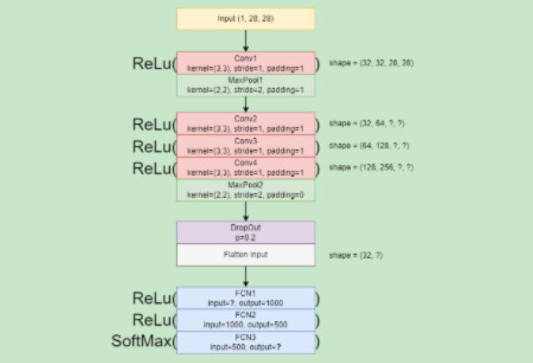

Name: Rachel Jasmine Canaman
Section: DS4A
Laboratory Task 6#

Objective:
Convert the given CNN architecture diagram into a PyTorch CNN model.
# Step 1: Import Required Libraries
import torch
import torch.nn as nn
import torch.nn.functional as F
import torch.optim as optim
from torchvision import datasets, transforms
from torch.utils.data import DataLoader
# STEP 2: Load and Prepare Dataset
# We use the MNIST dataset (28x28 grayscale images)
transform = transforms.Compose([
transforms.ToTensor(),
transforms.Normalize((0.5,), (0.5,))
])
train_dataset = datasets.MNIST(root='./data', train=True, download=True, transform=transform)
test_dataset = datasets.MNIST(root='./data', train=False, download=True, transform=transform)
train_loader = DataLoader(train_dataset, batch_size=32, shuffle=True)
test_loader = DataLoader(test_dataset, batch_size=32, shuffle=False)
0.3%
0.7%
1.0%
1.3%
1.7%
2.0%
2.3%
2.6%
3.0%
3.3%
3.6%
4.0%
4.3%
4.6%
5.0%
5.3%
5.6%
6.0%
6.3%
6.6%
6.9%
7.3%
7.6%
7.9%
8.3%
8.6%
8.9%
9.3%
9.6%
9.9%
10.2%
10.6%
10.9%
11.2%
11.6%
11.9%
12.2%
12.6%
12.9%
13.2%
13.6%
13.9%
14.2%
14.5%
14.9%
15.2%
15.5%
15.9%
16.2%
16.5%
16.9%
17.2%
17.5%
17.9%
18.2%
18.5%
18.8%
19.2%
19.5%
19.8%
20.2%
20.5%
20.8%
21.2%
21.5%
21.8%
22.1%
22.5%
22.8%
23.1%
23.5%
23.8%
24.1%
24.5%
24.8%
25.1%
25.5%
25.8%
26.1%
26.4%
26.8%
27.1%
27.4%
27.8%
28.1%
28.4%
28.8%
29.1%
29.4%
29.8%
30.1%
30.4%
30.7%
31.1%
31.4%
31.7%
32.1%
32.4%
32.7%
33.1%
33.4%
33.7%
34.0%
34.4%
34.7%
35.0%
35.4%
35.7%
36.0%
36.4%
36.7%
37.0%
37.4%
37.7%
38.0%
38.3%
38.7%
39.0%
39.3%
39.7%
40.0%
40.3%
40.7%
41.0%
41.3%
41.7%
42.0%
42.3%
42.6%
43.0%
43.3%
43.6%
44.0%
44.3%
44.6%
45.0%
45.3%
45.6%
45.9%
46.3%
46.6%
46.9%
47.3%
47.6%
47.9%
48.3%
48.6%
48.9%
49.3%
49.6%
49.9%
50.2%
50.6%
50.9%
51.2%
51.6%
51.9%
52.2%
52.6%
52.9%
53.2%
53.6%
53.9%
54.2%
54.5%
54.9%
55.2%
55.5%
55.9%
56.2%
56.5%
56.9%
57.2%
57.5%
57.9%
58.2%
58.5%
58.8%
# STEP 3: Define the CNN Model (Based on Given Diagram)
class CNNModel(nn.Module):
def __init__(self):
super(CNNModel, self).__init__()
# --- Convolutional Layers ---
self.conv1 = nn.Conv2d(1, 32, kernel_size=3, stride=1, padding=1)
self.pool1 = nn.MaxPool2d(kernel_size=2, stride=2, padding=1)
self.conv2 = nn.Conv2d(32, 64, kernel_size=3, stride=1, padding=1)
self.conv3 = nn.Conv2d(64, 128, kernel_size=3, stride=1, padding=1)
self.conv4 = nn.Conv2d(128, 256, kernel_size=3, stride=1, padding=1)
self.pool2 = nn.MaxPool2d(kernel_size=2, stride=2, padding=0)
# Dropout
self.dropout = nn.Dropout(p=0.2)
# Fully connected layers
self.fc1 = nn.Linear(256 * 7 * 7, 1000)
self.fc2 = nn.Linear(1000, 500)
self.fc3 = nn.Linear(500, 10) # 10 classes for MNIST digits
def forward(self, x):
x = F.relu(self.conv1(x))
x = self.pool1(x)
x = F.relu(self.conv2(x))
x = F.relu(self.conv3(x))
x = F.relu(self.conv4(x))
x = self.pool2(x)
x = self.dropout(x)
x = x.view(x.size(0), -1) # Flatten
x = F.relu(self.fc1(x))
x = F.relu(self.fc2(x))
x = F.softmax(self.fc3(x), dim=1)
return x
# Instantiate the model
model = CNNModel()
print(model)
CNNModel(
(conv1): Conv2d(1, 32, kernel_size=(3, 3), stride=(1, 1), padding=(1, 1))
(pool1): MaxPool2d(kernel_size=2, stride=2, padding=1, dilation=1, ceil_mode=False)
(conv2): Conv2d(32, 64, kernel_size=(3, 3), stride=(1, 1), padding=(1, 1))
(conv3): Conv2d(64, 128, kernel_size=(3, 3), stride=(1, 1), padding=(1, 1))
(conv4): Conv2d(128, 256, kernel_size=(3, 3), stride=(1, 1), padding=(1, 1))
(pool2): MaxPool2d(kernel_size=2, stride=2, padding=0, dilation=1, ceil_mode=False)
(dropout): Dropout(p=0.2, inplace=False)
(fc1): Linear(in_features=12544, out_features=1000, bias=True)
(fc2): Linear(in_features=1000, out_features=500, bias=True)
(fc3): Linear(in_features=500, out_features=10, bias=True)
)
# STEP 4: Define Loss Function and Optimizer
criterion = nn.CrossEntropyLoss()
optimizer = optim.Adam(model.parameters(), lr=0.001)
# STEP 5: Training Loop
epochs = 3 # keep small for testing
for epoch in range(epochs):
running_loss = 0.0
for images, labels in train_loader:
# Forward pass
outputs = model(images)
loss = criterion(outputs, labels)
# Backpropagation
optimizer.zero_grad()
loss.backward()
optimizer.step()
running_loss += loss.item()
print(f"Epoch [{epoch+1}/{epochs}], Loss: {running_loss/len(train_loader):.4f}")
Epoch [1/3], Loss: 1.6981
Epoch [2/3], Loss: 2.2520
Epoch [3/3], Loss: 2.3624
# STEP 6: Evaluate Model on Test Data
correct = 0
total = 0
with torch.no_grad():
for images, labels in test_loader:
outputs = model(images)
_, predicted = torch.max(outputs.data, 1)
total += labels.size(0)
correct += (predicted == labels).sum().item()
accuracy = 100 * correct / total
print(f"Test Accuracy: {accuracy:.2f}%")
Test Accuracy: 9.80%
# STEP 7: Final Output (Instead of Visualizations)
# Generate sample predictions
data_iter = iter(test_loader)
images, labels = next(data_iter)
outputs = model(images)
_, preds = torch.max(outputs, 1)
print("True Labels:", labels[:10].numpy())
print("Predicted Labels:", preds[:10].numpy())
True Labels: [7 2 1 0 4 1 4 9 5 9]
Predicted Labels: [0 0 0 0 0 0 0 0 0 0]